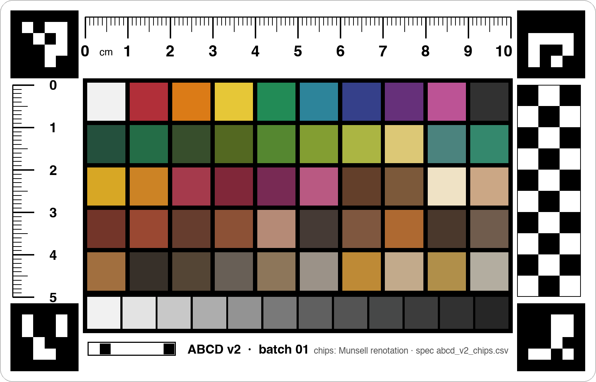
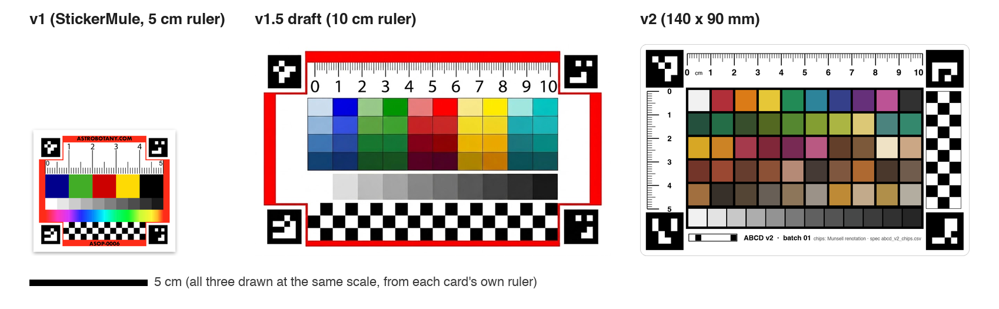
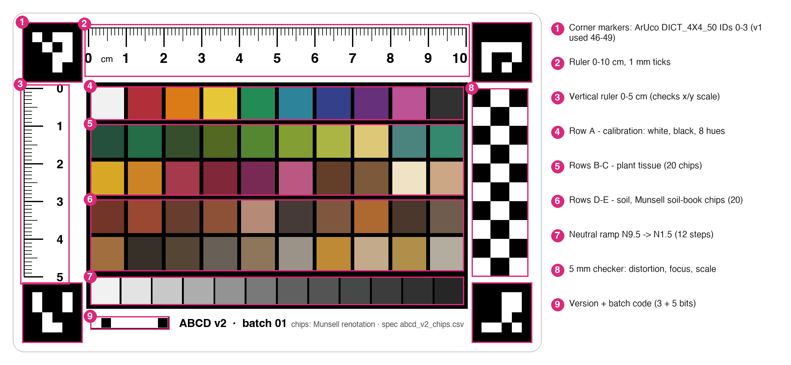

· Munsell-defined colour chips · self-identifying ArUco corner markers (IDs )



chips reduced by the gate:
largest remaining ΔE2000 between design and printable colour
/255 per channel vs an independent Munsell viewer, chips
The scanned soil-chart PDF supplied notations and names only; its pixel colours depend on the scanner and were not used.
Gives the colour-correction fit something to grip on in every hue direction, plus white, black and N5 (≈ 18 % grey) for exposure and white balance.
Every hue is a page of the Munsell Plant Tissue Color Book. Value/chroma are design targets: we'd like consultants to confirm or swap them for actual book chips.
Hues 10R to 2.5Y. The low-chroma greys span grey-regolith darkness. No chip claims to match a specific simulant or Apollo sample; targeting simulants needs published Munsell values for them.
To confirm on real photos before changing the app.
Comment on the GitHub issues: github.com/dr-richard-barker/ABCD_v2/issues